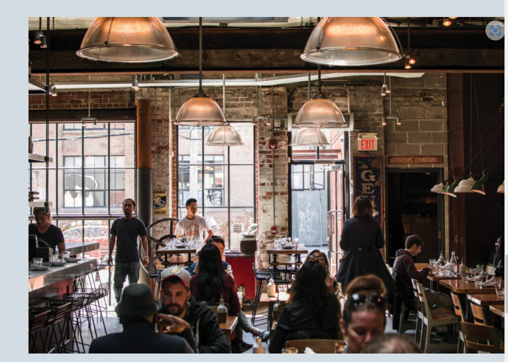
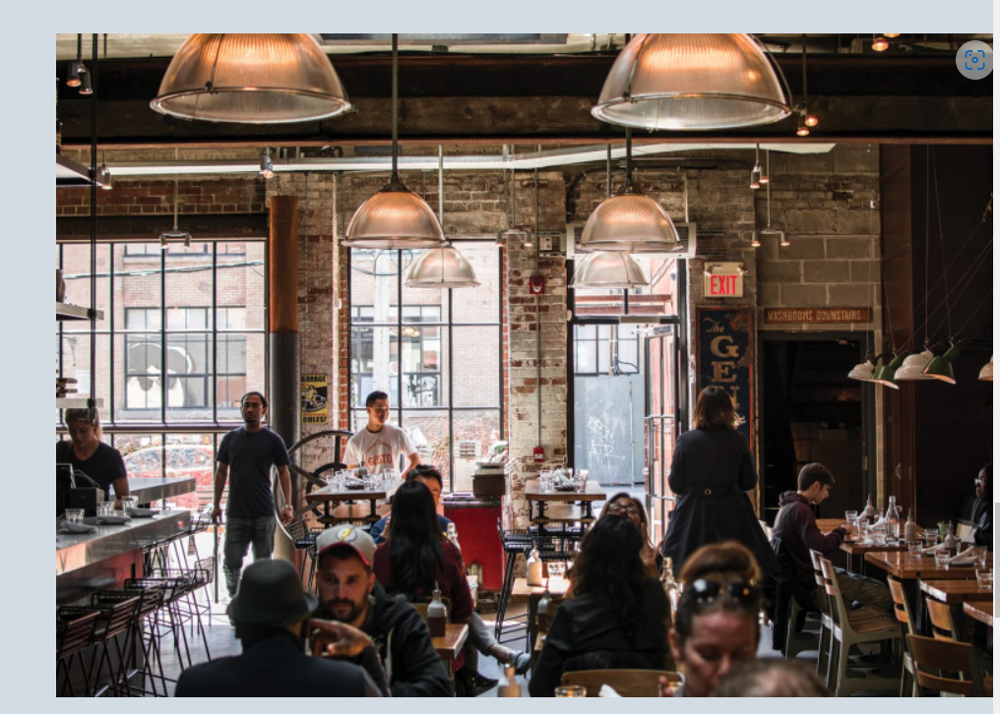
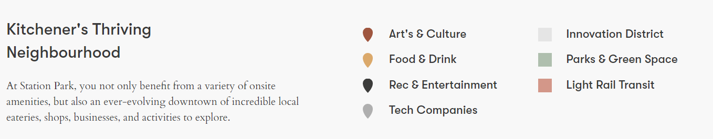
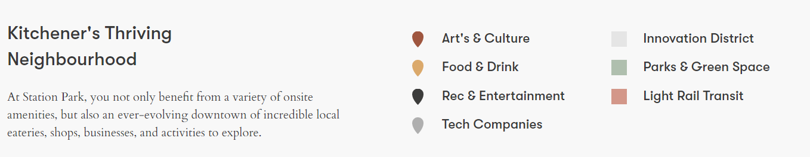

This brand new Phase III development is happening in the tech corridor in city of Kitchener. Located in the downtown core. Requires just $5000 down pyment on signing and then small increments over the next 2 year period!! Flexible downpayment option.
We are currently featuring pre-construction condos located in Kitchener, Ontario in the downtown core. We have one studio efficiency ubits and above upto 2 bedrooms. The building is literally across the new Google building!. Google is slated to hire high income earners in its new offices! It is also very close to University of Toronto School of Pharmacy and McMaster University Medical College. This enables a terrific upside potential for renting it in the future.
Details of the project can be sent to you
Jiandikishe sasa ili nikutumie habari zaidi kuhusu hiyo project
Bofya hapo tekelezamiradi@gmail.com
Synopsis : Kwa Muhthasari:
- Asking $ mid $500K for studio (efficiency) unit to approx $ 700K for large 2bdr
- 26 floors
- Gorgeous amenities
- Located in downtown Kitchener, Ontario. 1 hr drive from Toronto. Kitchener/Waterloo has one college, one university and multiple satellite campuses
- Building will be completed in 2026
- Various sizes and floors. Parking is extra and you can buy more than one at $ 50,000 each
- Amenities include roof-top BBQ, media, exercise room and so much more!
- World class commercial area at the ground level including cafes, boutiques, salons, restaurants, garden, park, running track etc.
- Other projects in Greater Toronto Area also available
KARIBUNI WANACHAMA WA DIASPORA.
Yasin Mohamed
Realtor
Remax Real Estate Centre Inc.
barua ya upepe: tekelezamiradi@gmail.com
Simu 416-527-4445


 

 
